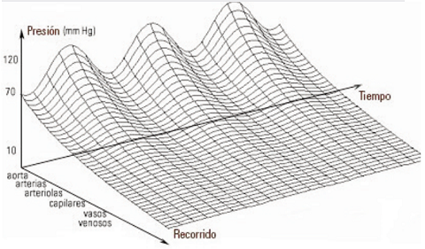
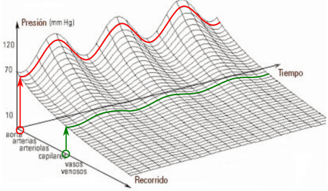

<html>
<head>
<title>MECANICA DE FLUIDOS, G20_53, fisica online, ejercicios resueltos</title>
<meta http-equiv="Content-Type" content="text/html; charset=UTF-8" />
<meta name="keywords" content="problemas resueltos, ejercicios resueltos, cbc, fisica, biofisica, fluidos, liquidos, gases, bernoulli, poiseuille, viscosidad, ideales, viscosos, humedad, difusion, osmosis, nomesalen, no me salen, ricardo cabrera" />
<meta name="description" content="Ejercicios y problemas resueltos, y apuntes teóricos de Fluidos, mecanismos de transporte de fluidos" />
<link rel="stylesheet" href="win_ie.css">
<style type="text/css">
<!--
.style1 {
	color: #3F6386;
	font-weight: bold;
}
.Estilo3 {color: #3F6386}
.Estilo16 {font-size: 16px}
.Estilo19 {font-size: 10px; font-weight: bold; font-style: italic; }
.Estilo26 {font-family: "Times New Roman", Times, serif;
	font-weight: bold;
	font-style: italic;
	font-size: 16px;
}
.Estilo25 {font-family: Verdana, Arial, sans-serif}
-->
</style>
</head>

<body bgcolor="#FFFFFF" text="#000000" alink="#000000" leftmargin="0" topmargin="0" marginwidth="0" marginheight="0">
<table align=center width="609" border="0" cellspacing="0" cellpadding="0"> 
  <tr bgcolor="#000000" align="right"> 
<td width="609"></td></tr> <tr bgcolor="#BB0000" valign="middle" align="left"> 
<td class="bodytext" height="20"><TABLE WIDTH="98%" BORDER="0" CELLSPACING="0" CELLPADDING="0">
  <TR ALIGN="center" CLASS="menuitem">
    <TD WIDTH="43" height="19" CLASS="menuitem"><A HREF="../../index.html" CLASS="menuitem">&nbsp;<B>home</B>&nbsp;</A></TD>
    <TD WIDTH="5" CLASS="menuitem"><FONT COLOR="#000000">|</FONT></TD>
    <TD width="119" CLASS="menuitem"><strong><a href="index_hdinam.html" class="menuitem">más de hidrodinámica </a> </strong></TD>
    <TD width="9" CLASS="menuitem"><FONT COLOR="#000000">|</FONT></TD>
    <TD width="127" CLASS="menuitem"><strong><a href="../../intro_NMS.html" class="menuitem">otros temas de F&iacute;sica</a></strong></TD>
    <TD width="10" CLASS="menuitem"><FONT COLOR="#000000">|</FONT></TD>
    <TD width="160" CLASS="menuitem"><strong><a href="../../lista_ciruela.html" class="menuitem">lecciones del maestro Ciruela </a></strong></TD>
    <TD width="8" CLASS="menuitem"><FONT COLOR="#000000">|</FONT></TD>
    <TD width="67" CLASS="menuitem"><strong><a href="../../lista_tonterias.html" class="menuitem">tonter&iacute;as</a></strong></TD>
    <TD WIDTH="7" CLASS="menuitem"><a href="../energia/index_energia.html" class="menuitem"></a><FONT COLOR="#000000">|</FONT></TD>
    <TD WIDTH="48" CLASS="menuitem">&nbsp;<B><FONT FACE="Arial, Helvetica, sans-serif"><A HREF="mailto: ricuti@gmail.com" CLASS="menuitem">@</A></FONT><A HREF="../../index.html" CLASS="menuitem"></A></B>&nbsp;</TD>
  </TR>
</TABLE></td></tr> <tr> <td class="bodytext" height="8"><p></td>
</tr> 
<tr align="center"> <td height="1029"> <table width="596" border="0" cellspacing="0" cellpadding="0"> 
<tr class="bodytext"> <td valign="top" width="596" height="987"> 
<table width="597" border="0" cellspacing="0" cellpadding="0"> <tr> 
  <td height="74" colspan="2" bgcolor="#D7FFFF" class="bodytext"><span class="bodytext"><strong><em><strong><em><strong><strong>&#160; &#160;</strong></strong></em></strong></em>NO ME SALEN<br />
</strong></span><span class="Estilo3"><em class="bodytext "><strong><em><strong><em><strong><strong>&#160; &#160;</strong></strong></em></strong></em>(<strong>PROBLEMAS RESUELTOS   DE BIOF&Iacute;SICA DEL CBC</strong>)</strong></em></span><br />
      <span class="titulograndegris Estilo16"><strong><em><strong><em><strong><strong>&#160; &#160;</strong></strong></em></strong></em>FLUIDOS<br />
      </strong></span><br /> </td>
  <td class="bodytext" rowspan="3" height="74" width="7">&nbsp;</td>
  <td class="bodytext" height="74" rowspan="3" valign="top" width="84"> 
<p></p></td></tr>
  <tr>
    <td height="14" colspan="2" bgcolor="#FFFFFF" class="bodytext">&nbsp;</td>
  </tr> 
<tr> <td width="149" height="45" valign="top" class="bodytext"><p></P>
    </td>
  <td width="357" class="bodytext"><p><strong>53 -  El gráfico muestra la presión manométrica  a lo largo del sistema circulatorio.</strong></p></td>
</tr>
<tr>
  <td height="180" colspan="2" align="center" valign="middle" class="bodytext"><p></p></td>
  <td class="bodytext" height="180">&nbsp;</td>
  <td class="bodytext" height="180" valign="top">&nbsp;</td>
</tr>
<tr>
  <td height="50" colspan="2" align="left" valign="middle" class="bodytext"><p><strong>a) Describa cómo varía la presión sanguínea  en la medida que se avanza en el recorrido aortaarterias-arteriolas-capilares y venas.  </strong>Por si no lo entendés, tataré de explicarte cómo se lee este gráfico. Se trata de un gráfico de 3 dimensiones. Cada dimensión aparece su significado en el extremo de eje. Presión, tiempo, recorrido. </p>
    <p>Suponete que querés conocer cómo varía la presión en función del tiempo en un tramo cercano al inicio del recorrido de la sangre, digamos, apenas sale de la aorta.</p></td>
  <td height="50" valign="middle" class="bodytext">&nbsp;</td>
  <td class="bodytext" height="50" valign="top">&nbsp;</td>
</tr>
<tr>
  <td height="25" colspan="2" align="center" valign="middle" class="bodytext"></td>
  <td class="bodytext" height="25">&nbsp;</td>
  <td class="bodytext" height="25" valign="top">&nbsp;</td>
</tr>
<tr>
  <td height="25" colspan="2" align="left" valign="top" class="bodytext"><p>Vas al eje del recorrido y ubicás esa posición (círculo rojo). Te desplazás hacia arriba hasta intersectar la curva correspondiente (flecha roja). Luego te desplazás en la dirección del avance del tiempo siguiendo las curvas (línea senoidal roja). Esa última curva te está contando como varía la presión de la sangre en ese tramo. Fijate que como está muy cerca del corazón oscila entre 120 y 70 mmHg. Fijate, además que esa oscilación no cambia con el tiempo (tenés que interpretarlo en perspectiva (con paralelas al eje del tiempo).</p>
    <p>Lo mismo hacés si querés conocer la variación de la presión en otro tramo del árbol cardiovascular. Por ejemplo a la altura de las arteriolas (círculo verde). Hacés los mismos pasos que antes, y podés ver, por ejemplo, que las oscilaciones son sincrónicas con las de la aorta, pero mucho más suaves, de menor amplitud. Si usás la perspectiva (en este caso con una paralela al eje <em>recorrido</em>), podés ver que la media para las arteriolas es de unos 40 mmHg.</p>
    <p><strong>b) Describa las variaciones de la presión en el  tiempo. Distinga esta evolución temporal en las  arterias en relación a la de las venas. </strong><em>En las arterias grandes la presión es pulsátil, tomando valores entre 120 mmHg (presión  sistólica) y 70 mmHg (presión diastólica). En  tanto que en las venas su valor es constante en  el tiempo.</em></p>
    <p><strong>c) Explique por qué una hemorragia arterial  resulta más peligrosa que una venosa. </strong><em>Al ser las presiones mucho mayores en las  arterias que en las venas tanto el caudal hemorrágico así como la fuerza para detener la pérdida serán mucho mayores en las arterias que en  las venas, además estas se distribuyen más  superficialmente y son más fácil de visualizar. </em></p>
    <p><strong>d) Se produce una incisión en una arteria  mayor de manera que la sangre sale hacia arriba  verticalmente; estime la altura del chorro. </strong><em>La salida de la sangre formará &ldquo;chorros&rdquo;  sucesivos de 160 cm y 93 cm de altura, debido al  carácter pulsátil de su presión</em>. Esto lo aprendieron en Hollywood. Y es una simple aplicación del principio de Bernoulli. Veamos a qué altura llega la sangre si sale por un agujero en una arteria durante el sístole y apuntando para arriba: </p>
    <blockquote>
      <p><strong><em>p<span class="epigrafe">r</span><strong><em><strong><strong><em><strong><em><sub>art</sub></em></strong></em></strong></strong></em></strong> + <strong><em><span class="Estilo25">&rho;</span></em></strong> g h<strong><em><strong><strong><em><strong><em><sub>art</sub></em></strong></em></strong></strong></em></strong></em></strong> + <strong><em>&frac12; <strong><em><span class="Estilo25">&rho;</span></em></strong> v<strong><em><strong><strong><em><strong><em><sub>art</sub></em></strong></em></strong></strong></em></strong><strong>&sup2;</strong></em></strong> <em><strong>= </strong></em><strong><em>p<span class="epigrafe">r</span><strong><em><strong><strong><em><strong><em><sub>atm</sub></em></strong></em></strong></strong></em></strong> + <strong><em><span class="Estilo25">&rho;</span></em></strong> g h<strong><em><strong><strong><em><strong><em><sub>atm</sub></em></strong></em></strong></strong></em></strong></em></strong> + <strong><em>&frac12; <strong><em><span class="Estilo25">&rho;</span></em></strong> v<strong><em><strong><strong><em><strong><em><sub>atm</sub></em></strong></em></strong></strong></em></strong><strong>&sup2;</strong></em></strong></p>
    </blockquote>
    <p>Llamé <em>art</em> al interior de la arteria y <em>atm</em> a ese punto más alto. Varios términos se anulan:</p>
    <blockquote>
      <p><strong><em>p<span class="epigrafe">r</span><strong><em><strong><strong><em><strong><em><sub>art</sub></em></strong></em></strong></strong></em></strong> +</em></strong> <strong><em>&frac12; <strong><em><span class="Estilo25">&rho;</span></em></strong> v<strong><em><strong><strong><em><strong><em><sub>art</sub></em></strong></em></strong></strong></em></strong><strong>&sup2;</strong></em></strong> <em><strong>= </strong></em><strong><em><strong><em><span class="Estilo25">&rho;</span></em></strong> g h<strong><em><strong><strong><em><strong><em><sub>atm</sub></em></strong></em></strong></strong></em></strong></em></strong></p>
      </blockquote>
    <p>Tomando <strong><em>p<span class="epigrafe">r</span><strong><em><strong><strong><em><strong><em><sub>art</sub></em></strong></em></strong></strong></em></strong></em>=</strong> <em><strong>16000 <span class="epigrafe">Pa</span></strong></em>, <strong><em>v<strong><em><strong><strong><em><strong><em><sub>art</sub></em></strong></em></strong></strong></em></strong></em></strong> <em><strong>=</strong></em> <em><strong>0,25 <span class="epigrafe">m/s</span></strong></em> y <strong><em><strong><em><span class="Estilo25">&rho;</span></em></strong></em></strong> <em><strong>=</strong></em> <em><strong>1060 <span class="epigrafe">kg/m</span><em>&sup3;</em></strong></em>, tenemos:</p>
    <blockquote>
      <p><strong><em>h<strong><em><strong><strong><em><strong><em><sub>atm</sub></em></strong></em></strong></strong></em></strong></em></strong> <strong>=</strong> <em><strong>1,5 m</strong></em><strong></strong></p>
    </blockquote>
    <p><strong>e) Se produce una incisión en un vaso en el  cerebro donde la presión manométrica es  -10 mmHg, ¿cuál es la consecuencia?</strong> Entraría aire al vaso.</p></td>
  <td class="bodytext" height="25">&nbsp;</td>
  <td class="bodytext" height="25" valign="top">&nbsp;</td>
</tr>
<tr>
  <td height="30" colspan="2" align="left" valign="top" class="bodytext">&nbsp;</td>
  <td class="bodytext" height="30">&nbsp;</td>
  <td class="bodytext" height="30" valign="top">&nbsp;</td>
</tr>
<tr>
  <td colspan="2" align="left" valign="top" class="bodytext"><p>&nbsp;</p>    <p><br>
    </p></td>
  <td width="7" class="bodytext">&nbsp;</td>
  <td width="84" valign="top" class="bodytext">&nbsp;</td>
</tr>
<tr>
  <td height="25" colspan="2" align="left" class="bodytext"><p class="epigrafe">Respuestas tomadas de la guía de ejercicios de la Cátedra de Biofísica, CBC, UBA.</p>    </td>
  <td class="bodytext">&nbsp;</td>
  <td width="84" rowspan="3" valign="bottom" class="bodytext"></td>
</tr>

<tr>
  <td height="18" colspan="2" bgcolor="#FFFFFF" class="bodytext">&nbsp;</td>
  <td class="bodytext">&nbsp;</td>
  </tr>

<tr> <td colspan="2" align="center" valign="middle" bgcolor="#CCCCCC" class="bodytext"><table width="85%" border="0" cellspacing="0" cellpadding="0">
  <tr>
    <td class="epigrafe">Algunos derechos reservados. 
  Se permite su reproducci&oacute;n citando la fuente. &Uacute;ltima actualizaci&oacute;n jul-22. Buenos Aires, Argentina. </td>
  </tr>
</table>  </td>
  <td class="bodytext" width="7">&nbsp;</td>
  </tr> 
<tr> <td height="18" colspan="2" class="bodytext">&nbsp;</td><td class="bodytext" width="7">&nbsp;</td>
<td class="bodytext" width="84">&nbsp;</td>
</tr> 
</table></td></tr> </table>
<p></td></tr> 
<tr> <td class="bodytext"><p></td></tr> 
</table>
</body>
</html>
